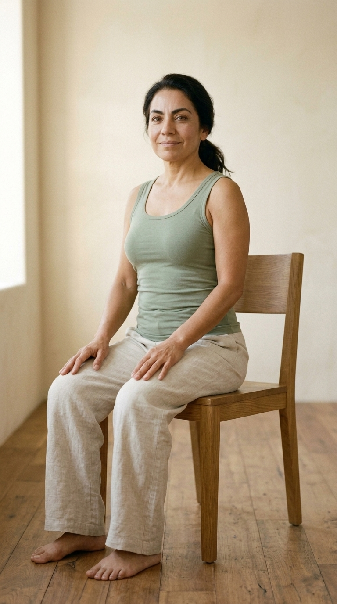
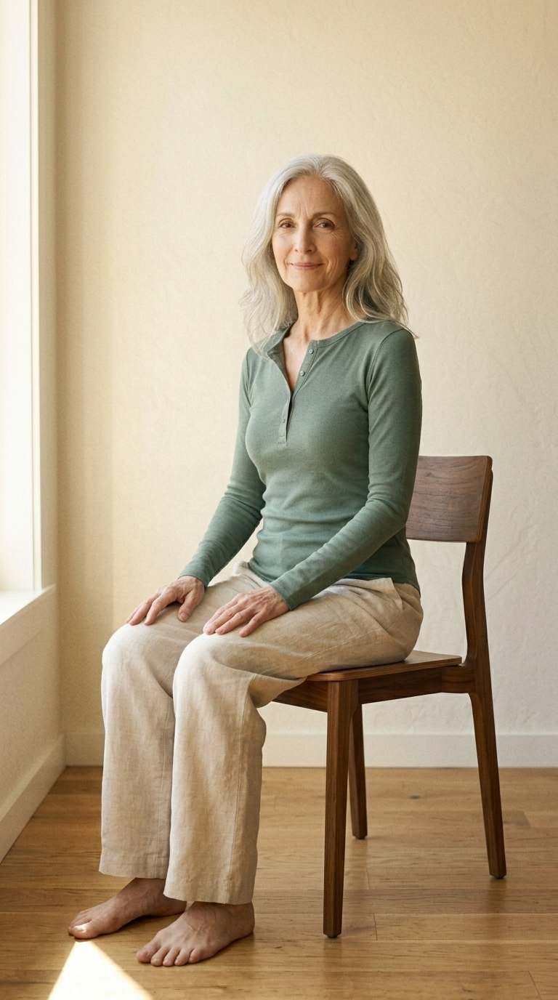
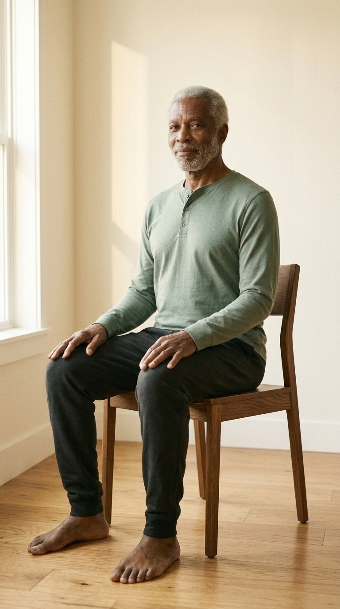

What I'm asking from you
Watch each pair side-by-side, ideally on a phone or tablet (the videos are 9:16 portrait — they're designed for mobile). They auto-loop.
For each cast member, tell me: does the Krea version land identity, mood, and breath rhythm as well as the Google version? If you'd switch one out for the other on the production pipeline based on what you see, which way?
Reply to whoever shared this with you — your gut reaction is more useful than line-by-line notes.
Why this matters
| Dimension | Google direct | Krea (Pro plan) |
|---|---|---|
| Cost per clip | ~$2.00 | ~$0.80-1.20 |
| Daily quota cap | ~6-8 clips on Fast preview tier | ~25-40/mo on Pro plan |
| Filter retry rate | ~30-50% rerolls (audio safety filter) | 0% in this test (4/4 first-attempt) |
| Generation wall-time | 30-60s including retries | 60-75s steady |
Krea is roughly half the cost and bypasses the daily quota wall we keep hitting on Google's preview tier. The question is whether the output quality holds up.
Maria · 52 · cohort anchor
Latina · ponytail · sage tank
Wide · full posture

conditioning still
Google direct
Veo 3.1 Fast (Google)1st-attempt pass
Krea
Veo 3.1 Fast (Krea)62s wall-time
What to compare
- Identity match — is this the same Maria across both clips?
- Breath subtlety — chest rise/fall the same gentleness?
- Loop seamlessness — which lands cleaner at the loop boundary?
David · 47 · glasses identity stress test
Salt-and-pepper · wire-frame glasses
Medium · cue close-up
conditioning still
Google direct
Veo 3.1 Fast (Google)1st-attempt pass
Krea
Veo 3.1 Fast (Krea)73s wall-time
What to compare
- Glasses fidelity — wire-frame round shape preserved? Light reflection drift?
- Stubble continuity — two-day beard rendered consistently?
- Eye warmth through lenses — soft contact, not vacant?
Eleanor · 67 · age-affirming features
Silver-grey hair · smile lines · hazel eyes
Wide · full posture

conditioning still
Google direct
Veo 3.1 Fast (Google)1st-attempt pass
Krea
Veo 3.1 Fast (Krea)73s wall-time
What to compare
- Silver-grey hair texture — wave preserved, no over-smoothing?
- Smile lines — age-affirming, NOT smoothed away?
- Critical: do either of them "youth-ify" Eleanor's face?
James · 70 · dignified strength
Black · grey beard · sage henley
Wide · full posture

conditioning still
Google direct
Veo 3.1 Fast (Google)1st-attempt pass
Krea
Veo 3.1 Fast (Krea)65s wall-time
What to compare
- Beard line continuity — close-cropped, never bushy?
- Posture dignity — upright, no slouching drift?
- Calm-strong default expression — minimal smile preserved?